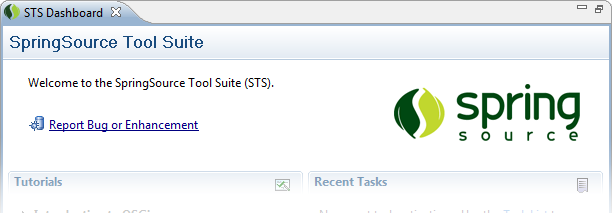
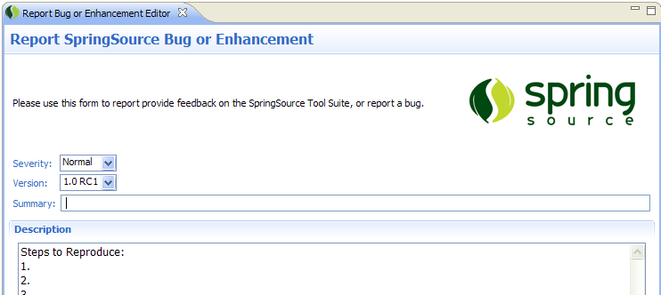
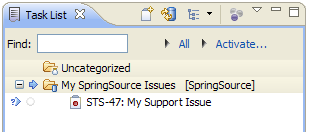

STS makes it easy to report SpringSource bugs or enhancement requests right from your development environment. You can open a new report by clicking the link at the top of the dashboard.

Once you have selected a product. An editor will appear where you can submit your bug report or enhancement request.

Once your report has been submitted, you will be able to track it to its resolution using the integrated task list. The task list will notify you with a blue arrow icon whenever anyone updates your issue. To view the changes or modify the report yourself, simply double-click the task to open a rich editor in STS.
